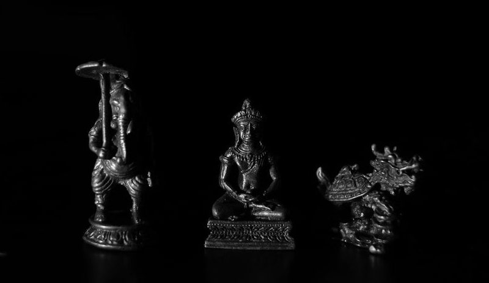
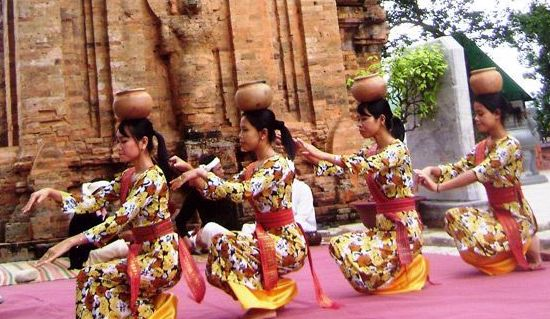

Đây là quần thể kiến trúc Chăm Pa kiến trúc lớn nhất Việt Nam tính tới hiện tại. Tháp xinh đẹp nằm gọn gàng trên một quả đồi nhỏ bên bờ sông Cái hiền hòa.
Vị trí ngọn đồi khá thoáng gió với độ cao khiêm tốn chỉ 50 m so với mặt nước biển. Từ xa bạn cũng có thể dễ dàng nhận ra tháp Ponagar vì hình dáng và kiến trúc rất đặc sắc.Thời xưa người Chăm Pa ở Khánh Hòa thờ phụng nữ thần Ponagar, Người luôn kề bên bảo vệ chăm lo đời sống cho người dân, giúp họ có đất đai để sinh sống, trồng trọt. Ponagar được người dân tôn là Thiên Y Thánh Mẫu. Trong tâm niệm của người Chăm Pa xưa Thiên Y Thánh Mẫu được xếp vào hạng thượng đẳng thần, muôn người thờ phụng. Bà là người tái sinh ra đất, nước, cây cối, thực phẩm cho nhân dân vì thế người Chăm coi bà như sự khởi nguyên của sự sống.
Khu di tích tháp Ponagar được chia làm 3 phân khu từ dưới lên trên tương ứng với 3 tầng kiến trúc:
Đến với tháp Bà Ponagar vào khoảng cuối tháng 3 âm lịch bạn sẽ có cơ hội được tham gia lễ hội tháp Bà (từ 21 đến 23/3 lịch âm). Đây là thời điểm thích hợp nhất để tìm hiểu về Ponagar cũng như hòa mình vào các hoạt động văn hóa của người dân địa phương.
Số 61 Hai Tháng Tư, Vĩnh Phước.
3. Những nơi lấp đầy cái bụng lân cận:
7749 tiệm bánh căn kiêm bánh xèo nằm trên đường Tháp Bà đối diện. Với giá trung bình từ 5.000-7.000 VND/ cặp hoặc /cái, tương ứng với bánh căn và bánh xèo, chắc chắn sẽ làm thực khách hài lòng. Cũng là trên con đường Tháp Bà đó, càng đi bạn sẽ càng thấy lag mắt vì thực đơn của các quần thức ăn, từ món u tơí Á, từ cao lương mĩ vị tới ăn vặt vỉa hè.